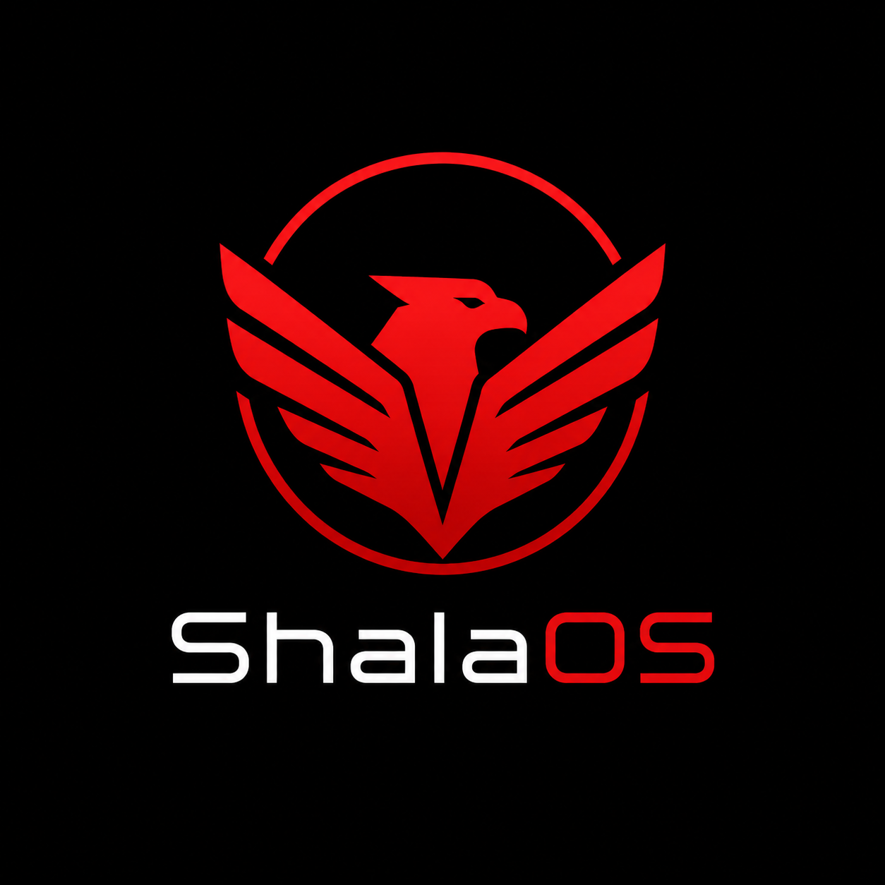
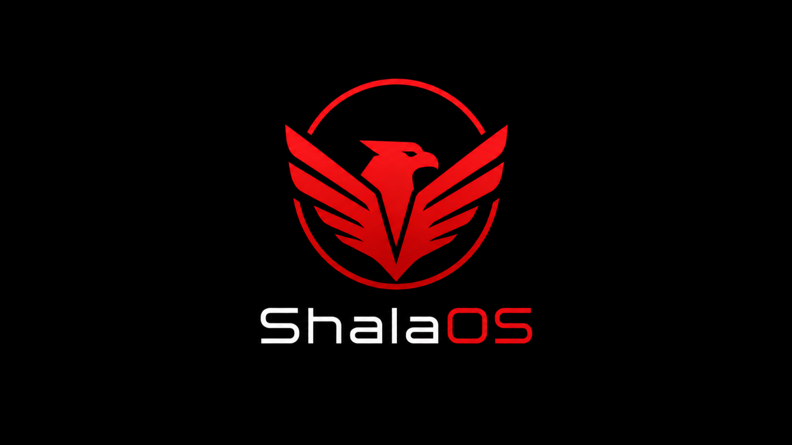

🦅
Baştan sona kimlik
Logo, duvar kağıdı, SDDM, Plymouth açılış, panel başlat düğmesi ve karşılama sayfası — her yerde ShalaOS.

ShalaOSArch Linux tabanlı, KDE Plasma masaüstülü, koyu-kırmızı dardania temalı özel Linux dağıtımı.
x86_64 · UEFI + BIOS · imzalı ve doğrulanabilir

Logo, duvar kağıdı, SDDM, Plymouth açılış, panel başlat düğmesi ve karşılama sayfası — her yerde ShalaOS.
Breeze Dark tabanlı koyu-kırmızı Global Tema (AccentColor 228,20,30), renk şeması ve pencere dekorasyonu.
Dil, klavye ve saat dilimi (İstanbul) baştan yapılandırılmış.
Denemek için canlı ortam; Calamares ile diske kurulum. İnternet gerektirmez.
Kurulumdan sonra pacman -Syu ile sürekli güncel kalır.
Her sürüm SHA-256 sağlaması ve GPG imzasıyla doğrulanabilir.
En güncel ISO Releases sayfasındadır. İndirdikten sonra bütünlüğü doğrula:
sha256sum -c ShalaOS-*-Dardania-x86_64.iso.sha256
gpg --import KEYS
gpg --verify ShalaOS-*-Dardania-x86_64.iso.sig ShalaOS-*-Dardania-x86_64.isoKurulum adımları için kurulum kılavuzuna bak.